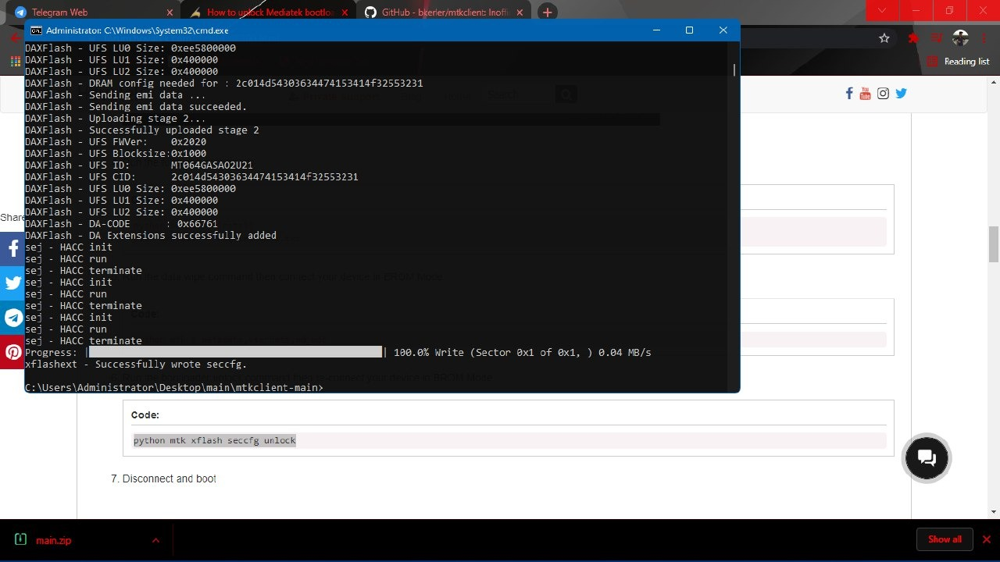
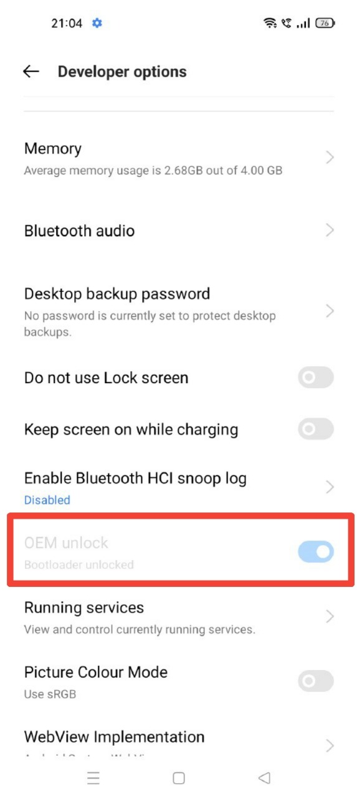

Requirements:
- PC or Laptop
- Internet Connection
- USB Cable
- Take a backup of your data since it will be wiped
- Go to About phone - Version, and tap build number 7 times
- Go to Settings - advanced settings - Developer options and turn on OEM unlocking and USB debugging
- Windows 10/11
Chapter 1: Unlocking the Bootloader
Install Python from windows store
And download these 2 files:
Now go to the MTKclient folder which has been extracted.
Now open command prompt or powershell in that folder.

Now type pip3 install -r requirements.txt and hit enter, and press y when it asks you "Y/N"
Now type, python mtk da seccfg unlock and hit enter (this commands unlocks the bootloader)
Then power off your phone and hold both volume buttons and connect usb cable (DON'T LEAVE THE BUTTONS, KEEP THEM HOLDING THROUGHOUT THE PROCESS)
Now disconnect usb and type python mtk e userdata,metadata (this command formats data.)
Now do the same thing you did with the seccfg command.
After this unplug your phone and turn it on (It'll show your device dm verity corrupted and first boot might take 20-25 mins, don't panic)
Now your bootloader is unlocked.